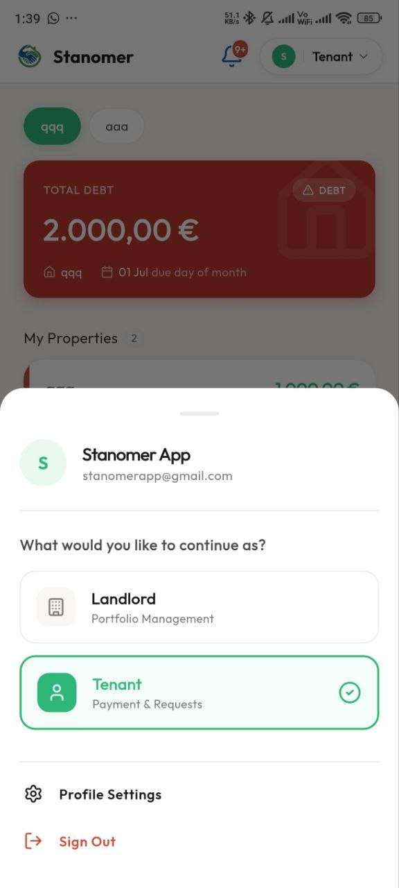
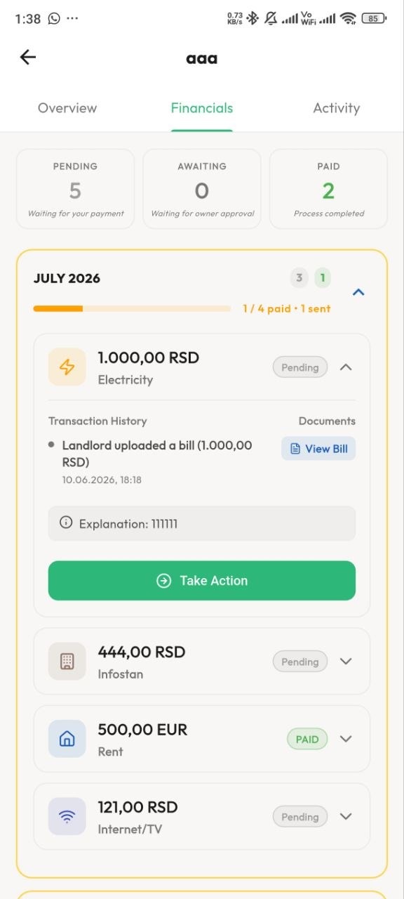
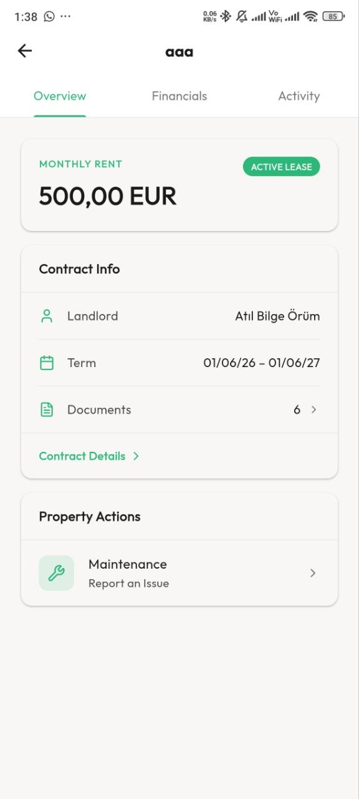
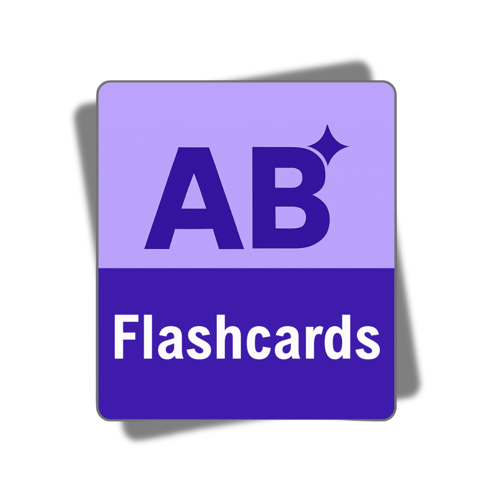
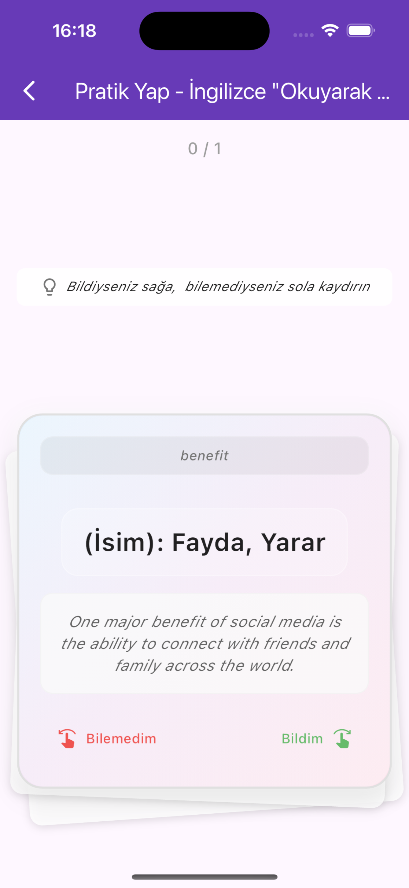
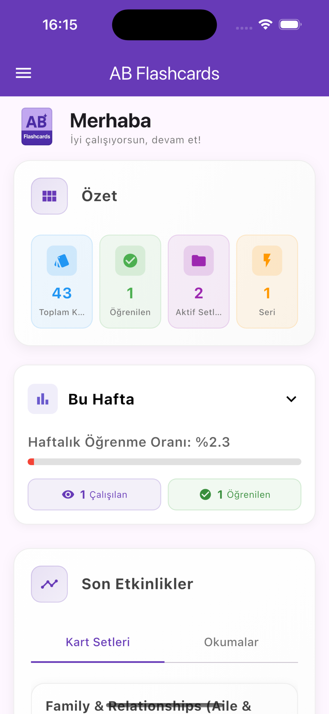
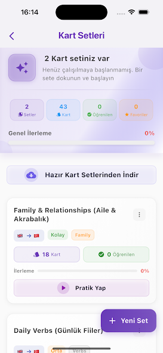

Atıl Bilge Örüm
Product Builder & Senior Product Manager
I don't just write PRDs and wait for engineering sprints. I design systems, validate with real users, and ship working prototypes from zero to production.
Live Products & AI Artifacts
Paletra
AI Native App Live iOS Android LLM API AntigravityAn AI-driven seasonal color analysis mobile application. I managed the entire cycle—from prompt architecture and core logic to App Store/Play Store deployment—entirely independently using Antigravity.
Architecture & Tradeoffs
Workflow Automated
Automated the traditionally manual and expensive process of personal seasonal color analysis. Instead of relying on human consultants, it uses LLM vision capabilities to instantly analyze user photos. I managed the entire cycle—from prompt architecture and AI rules to full production deployment—entirely independently.
Cost & Latency Tradeoff
To navigate high Vision API token costs, I implemented lossless image compression to minimize the input payload without degrading analysis quality. For the output, I decoupled the report generation: I relied on the LLM strictly for the high-reasoning, expert analysis phase, while rendering all repetitive and structured report components locally via code optimizations. Combined with asynchronous UI loading states to mask inference latency, this ensured scalable unit economics and a seamless user experience.

Stanomer
Live on Web, iOS & AndroidA privacy-first digital property management assistant localized for the Serbian rental market. Architected with a "local-first" storage logic rather than cloud-dependence to ensure maximum user privacy.




ABFlasCards
Live on AndroidA lightweight, highly responsive learning utility application. Completely designed, developed, and deployed independently to solve a personal language learning pain point.



Enterprise Rapid Prototyping
Gravity & Orbit (Internal Tools)
Bridged the gap between product ideation and engineering execution at Eva Commerce. Instead of static Notion PRDs, I built interactive, working prototypes to validate logic instantly.
The "Zero to Prototype" Workflow
1. Ideation
Business needs defined
2. Rapid Build
Working prototype built in hours via Antigravity
3. Validation
Stakeholder interaction & feedback
4. Handoff
Validated logic sent to Engineering
Help Center Architecture (help.eva.guru)
Designed a Notion-backed infrastructure from scratch. Built the first fully working version to empower the product team to write, edit, and publish articles instantly without developer dependency.
CMS Architecture Flow
Product Team
Writes & updates docs directly in Notion
Notion API Integration
My Prototype: Fetches data & renders web pages dynamically
Live Help Center
Handoff to Eng. for optimization & scale
Enterprise Foundation
Eva Commerce
2022 - PresentHead of Product Excellence / PM
Managed cross-functional teams, guided advanced data analytics, and oversaw algorithm development for Amazon seller ads optimization.
Agito
2006 - 2022Senior Consultant Analyst Manager
Managed multiple teams (5-10 analysts) overseeing large-scale IT transformation and migration projects in Insurtech.
HSBC
2013Senior Analyst
Prepared business analysis plans and drove enterprise-level integrations including the IVR system project.
Certifications & Toolkit
Rooted in strong analytical frameworks while embracing modern development speed.